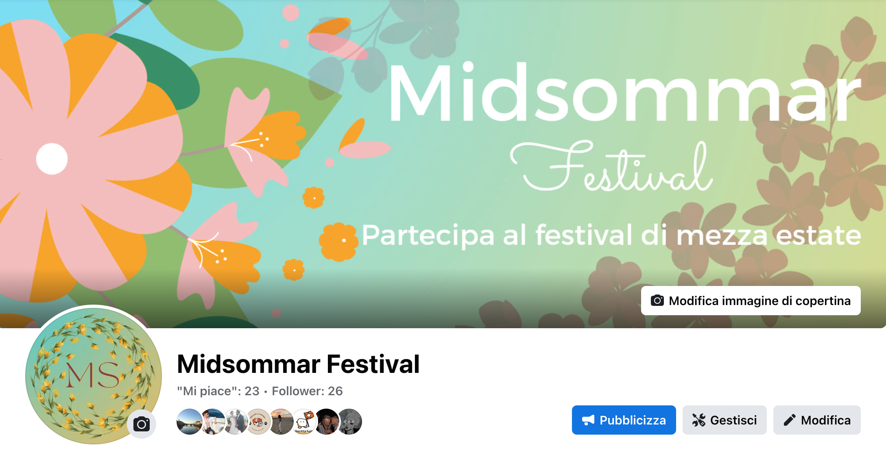

Il Midsommar è un insieme di manifestazioni festive celebrate in vari paesi del Nord Europa, che hanno luogo in un periodo di giorni compreso, all’incirca, tra il 21 e il 25 Giugno. Il sito web, è stato creato con lo scopo di rappresentare in maniera generale il tipo di esperienza che si può vivere partecipando a questo tipo di festività in modo folkloristico, ovvero rispettando le classiche tradizioni Svedesi, offrendo un luogo e una data specifica, per permettere agli appassionati di festival, famiglie e gruppi di giovani adulti di conoscere, approfondire, e di prenderne parte.
L’obiettivo principale del sito web è introdurre all’utente un tipo di festival tradizionale non appartenente alla cultura Italiana, pubblicizzandolo, anche sui social, e dando la possibilità di prenderne parte offrendo una data e un luogo precisi.
Il sito è indirizzato ad un target ampio, essendo un festival popolare adatto a tutti, ma nello specifico lo si può indirizzare verso le famiglie e i gruppi di giovani adulti (fascia 20-30 anni).
Il competitor principale è il sito ufficiale del turismo e delle informazioni turistiche della Svezia, che offre un panorama della storia e delle tradizioni del festival del Midsommar, offrendo anche mappe e alloggi per il periodo dei vari festival, ma con la mancanza di localizzazione della lingua Italiana.
In lingua italiana non esistono competitor simili, ma siti che raccontano in maniera generale il tipo di festività e reindirizzano ad altri siti esteri per maggiori informazioni, come la pagina ilTurista.info.
La struttura principale del sito web si presenta con un margine vuoto posto a capo della pagina, l’header, composto da logo che riconduce alla pagina principale (in alto a sinistra), e dalla barra di navigazione con le quattro sezioni principali: ‘home’, ‘il festival’, ‘esperienze’ e ‘galleria’ (in alto a destra), che riportano alle pagine dedicate. Nel footer è presente una simile barra di navigazione posizionata al centro ma con in aggiunta le sezioni ‘documentazione’ e ‘crediti’. Questa struttura è la stessa in tutte le pagine per mantenere una coerenza grafica e visiva.
Le scelte stilistiche del sito si sono ispirate ad una palette pressoché uniforme; colori pastello che ricordano l’estate, la natura ed il sole, in armonia con le immagini di background di ogni pagina, e in concordanza con i colori della Svezia (il giallo ed il blu). Inoltre in alcune sezioni (‘Il Festival ed ‘Esperienze’) la scelta di un leggero opaco nello sfondo richiama una sensazione quasi onirica e fiabesca, richiamando al “Sogno di una notte di mezza estate”.
Il font principale utilizzato è ‘Montserrat’ (sans-serif), leggero e semplice, e per i due titoli della sezione “Esperienze e “Galleria”, ‘Nunito’ (sans-serif).
I linguaggi web utilizzati per la creazione del sito sono HTML e CSS.
A supporto della progettazione, ulteriori strumenti sono stati:
Visual Studio Code, come editor di codici;
Bootstrap, per l’inserimento di contenitori responsivi e caroselli;
Google Fonts, per l’inserimento del tipo di caratteri;
FontAwesome, per le icone social;
Adobe Color, per confrontare la ruota dei colori;
Unsplash, per le immagini a libera licenza;
Adobe Lightroom, per la modifica delle immagini;
Pexels, per il video a libera licenza;
iMovie, per il montaggio del video;
Spotify, per l’inserimento di playlist;
YouTube, per l’inserimento del video nella homepage;
Google Maps, per l’inserimento della mappa;
Canva, per la realizzazione del logo, favicon e post per la parte social;
Whatsapp, Instagram e Facebook per la pubblicizzazione;
GitHub, per la pubblicazione;
Google Analytics, per la valutazione dei risultati.
Per attirare l’attenzione del target utente, in questo caso specifico, alla partecipazione di un festival, a mio parere la parte grafica è essenziale, ed è proprio da questo spunto che è partita la mia ricerca verso i competitors più vicini a questo evento, ed i risultati hanno mostrato che la maggior parte dei siti che lo pubblicizzano hanno uno stampo prettamente giornalistico (come la pagina ilTurista.info), descrittivo (come la pagina principale del turismo della Svezia) e confusionario, e nonostante risultino esaustivi nella descrizione, si denota una poca valorizzazione della parte grafica ed accattivante di un evento di tale portata come un festival nazionale. Proprio per questo nella realizzazione del sito ho deciso di puntare soprattutto a quella parte mancante che non ho ritrovato nei vari competitors, non dando per scontato che chi si imbatte in questo tipo di evento abbia già un’idea chiara dell’esperienza che si sta offrendo e sappia già dove e cosa cercare.
L’obiettivo di questo progetto ha innanzitutto lo scopo di far conoscere il festival del Midsommar, fornendo informazioni sufficienti per valutare l’esperienza ed invogliare l’utente a proseguire la ricerca per prenderne parte. Nel raggiungere lo scopo, ho deciso quindi di pubblicizzarlo tramite una pagina Instragram per gli utenti più giovani puntando al raggiungimento dei 40 followers, e Facebook per la fascia più adulta puntando ad un raggiungimento di 20 mi piace alla pagina altrettanto dedicata.
Il target utente del sito può variare leggermente a seconda del contesto e del paese in cui viene visto. In generale infatti, il festival a cui fa riferimento è aperto ad un vasto pubblico e coinvolge persone di diverse età e background: principalmente agli amanti della cultura e delle tradizioni locali, ai turisti e visitatori; ma anche agli appassionati di eventi sociali, gli amanti della natura, i camminatori, i ciclisti e gli escursionisti che possono trovare nel festival un'opportunità per trascorrere del tempo all'aperto ed immergersi in paesaggi naturali. Basandoci poi sulla descrizione precedente, possiamo ampliare ulteriormente il target utente includendo le fasce d’età specifiche che potrebbero essere interessate a quello che il sito web si propone di offrire: famiglie con bambini (i genitori possono portare i loro figli più piccoli per partecipare alle attività all’aperto, i giochi e i banchetti); i giovani adulti (compresi adolescenti e studenti universitari), che possono trovare nel festival occasione per socializzare, incontrare nuove persone e divertirsi con gli amici; adulti e lavoratori, che possono partecipare al festival nei giorni di ferie, rilassarsi e allontanarsi dalla routine quotidiana; anziani, che si possono unire alla comunità locale e partecipare alle attività più tranquille.
Per gli utenti sopraelencati , Instagram e Facebook risultano essere i migliori strumenti per rendere efficace la diffusione di questo evento e del sito web, dandone visibilità sia alla fascia giovani-adulti, studenti e famiglie su Instagram, con pagina e post dedicati che rimandano al sito web; sia alla parte più adulta, tarda età adulta e utenti casuali su Facebook, con la creazione di una pagina altrettanto dedicata.
Analizzando i risultati ottenuti, si può constatare che gli obiettivi posti sono stati raggiunti e superati: entrambe le pagine hanno guadagnato l'attenzione di un pubblico prettamente più ampio su Instagram, ipotizzando un approccio tematico al sito basato sull'idea di festival, di musica e di estate al pubblico più giovane, mentre quello più maturo ma meno ampio su Facebook, associato al tema della tradizione, della convivialità e alla sfera culturale.
